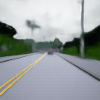
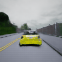
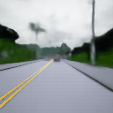
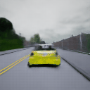

Predicting semantic segmentation frames of traffic environments. The data is obtained using the CARLA simulator at 5 fps. Results below are from test/validation data. Conditioned on 10 initial frames. Image dimensions are 3x128x128.
 


